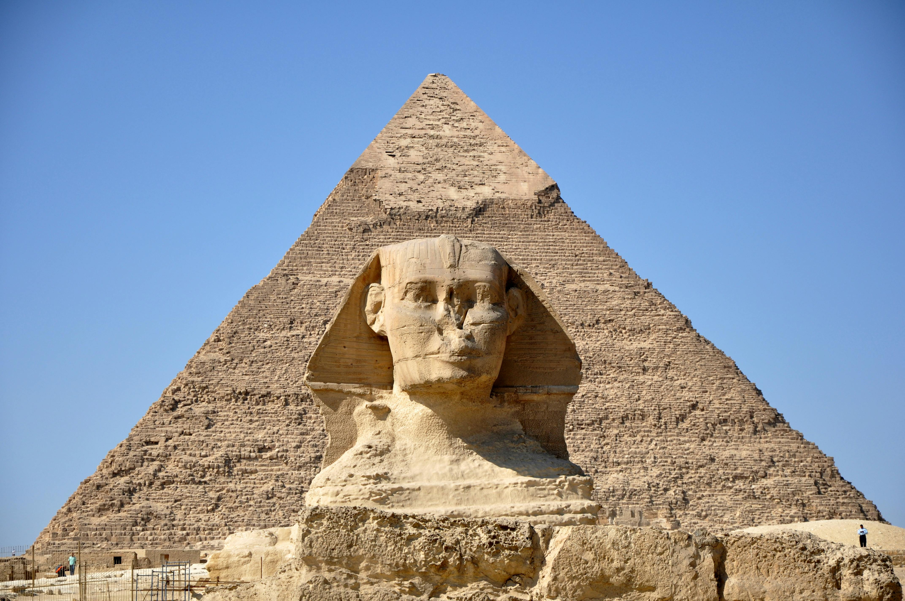
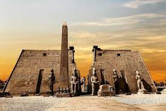

Welcome to Egypt, a land of timeless wonders where ancient history and vibrant culture come together to create an unforgettable experience.
| Located in Giza, these are among the Seven Wonders of the Ancient World. You can visit the Great Pyramid of Giza, the Pyramid of Khafre, the Pyramid of Menkaure, and the famous Sphinx. |  | This city is home to many magnificent ancient sites such as the Karnak Temple, the Luxor Temple, and the Valley of the Kings where you can explore the tombs of pharaohs. The Temple of Hatshepsut is also worth a visit. |  |
| The capital city offers many landmarks, including the Egyptian Museum with its extensive collection of ancient artifacts, the Citadel of Saladin, and the bustling Khan El Khalili market. | |
Known for its coastal beauty and rich history, you can visit the modern Bibliotheca Alexandrina, the Catacombs of Kom El Shoqafa, and the Citadel of Qaitbay. | |
| Cities like Sharm El Sheikh and Hurghada provide stunning beaches and water activities such as diving and snorkeling. | |
Located in the Western Desert, this oasis offers unique natural landscapes, natural springs, salt lakes, and a chance to experience local Bedouin culture. | |